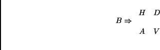

The convolution version can be used to derive a Wavelet Matrix. For a general case, it is simpler to use the convolution method. The matrix form becomes practical in repetitive special case applications.
The 2-D transform has four components: the average, vertical, horizontal, and diagonal. Two general computational means exist to generate a one-resolution transform. These can derive means for performing many resolutions.
A complete
transform method returns a result matrix which is the same size as the
source matrix. The result contains the four components. Each component
resides on 4 corners of the matrix. Given a matrix B, the transform is to
yield the following form:

where A is the average component, H is the horizontal component, V is the
vertical component, and D is the difference component. There is another form which is also used as an example:
AVHD
The first version is simple in concept, but provides a few more possibilities for error and confusion. Regardless of the case, the four components have the following definitions: